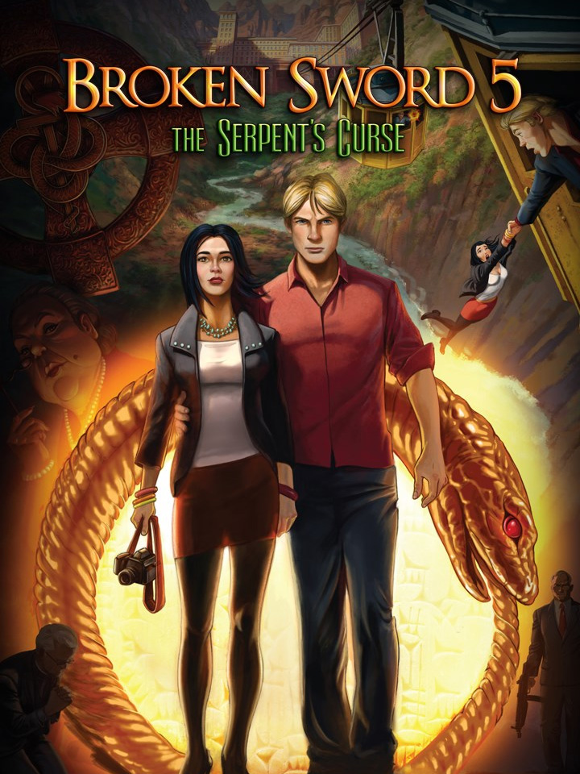

Broken Sword 5: The Serpent's Curse
Broken Sword 5: The Serpent's Curse
Details
|  | |
| Playtime | Not Played |
| Last Activity | Never |
| Added | 2023-08-11 0:29:07 |
| Modified | 2025-12-19 11:05:13 |
| Completion Status | Not Played |
| Library | Steam |
| Source | Steam |
| Platform | Macintosh PC (Linux) PC (Windows) |
| Release Date | 2013-12-04 |
| Community Score | 72 |
| Critic Score | 71 |
| User Score | |
| Genre | Adventure Point-and-click Puzzle Role-playing (RPG) |
| Developer | Revolution Software |
| Publisher | Deep Silver Ravenscourt Revolution Software |
| Feature | Single Player |
| Links | Steam GOG Community Wiki Official Website Wikipedia App Store (iPhone) App Store (iPad) Twitch Nintendo Playstation Discord |
| Tag | 1990's Adventure Cartoony Cinematic Conspiracy Detective Drama Exploration Female Protagonist Funny Hand-drawn Historical Immersive Indie Investigation Mystery Point & Click Puzzle Singleplayer Story Rich |
Description
Paris in the spring. Shots ring out from a gallery…
A robbery… a murder… and the beginning of another epic, original Broken Sword adventure.
From multi-award winning Revolution Software comes the latest explosive episode in this classic series. Playing as intrepid American George Stobbart and sassy French journalist Nico Collard, you find yourself on the trail of a stolen painting – and a murderous conspiracy. A conspiracy whose roots lie in mysteries older than the written word...
Armed only with logic, integrity and a wry sense of humour - can George and Nico save mankind from disaster?
Can you solve the secret of the Serpent’s Curse? A curse forged by the Devil himself...
Key Features:
This Definitive Edition also includes:
A robbery… a murder… and the beginning of another epic, original Broken Sword adventure.
From multi-award winning Revolution Software comes the latest explosive episode in this classic series. Playing as intrepid American George Stobbart and sassy French journalist Nico Collard, you find yourself on the trail of a stolen painting – and a murderous conspiracy. A conspiracy whose roots lie in mysteries older than the written word...
Armed only with logic, integrity and a wry sense of humour - can George and Nico save mankind from disaster?
Can you solve the secret of the Serpent’s Curse? A curse forged by the Devil himself...
Key Features:
- The latest game in the global smash Broken Sword series
- Solve riddles, defeat conspiracies, and survive chilling threats
- A wonderful cast of characters - all fully voiced
- Classic point-and-click gameplay
- Stunning music from world-acclaimed composer, Barrington Pheloung
This Definitive Edition also includes:
- Unlockable Character Gallery
- Full controller support
- Additional animations and sound effects
- Enhanced UI
- Tap-to-continue speech option